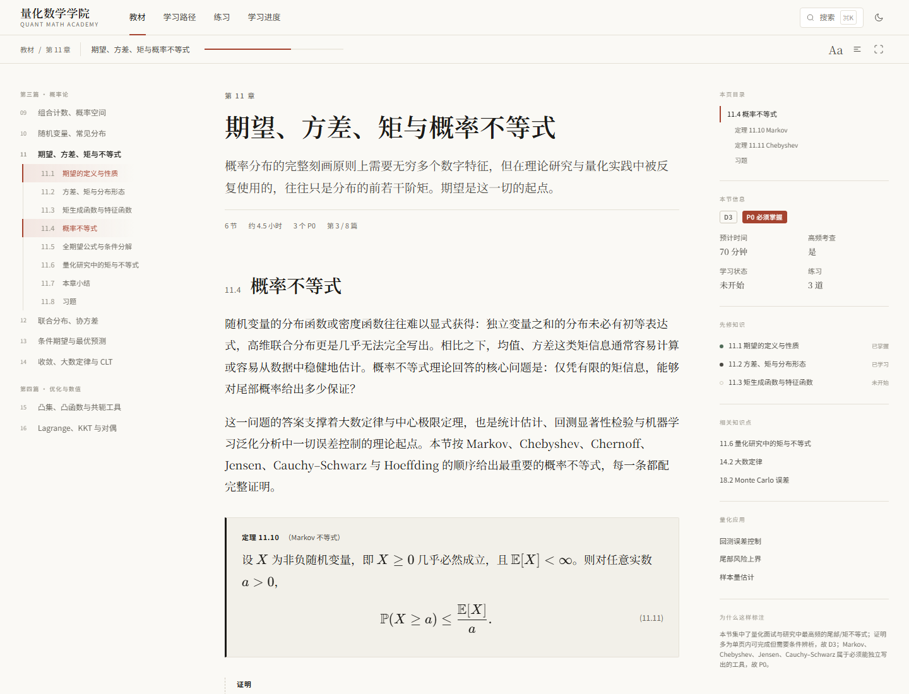
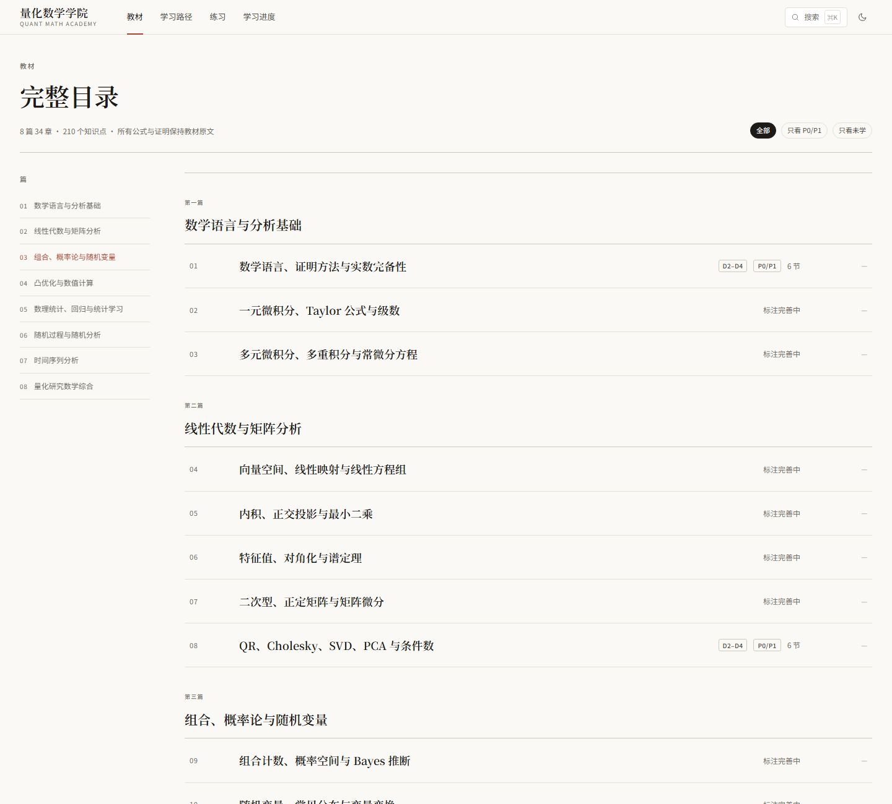
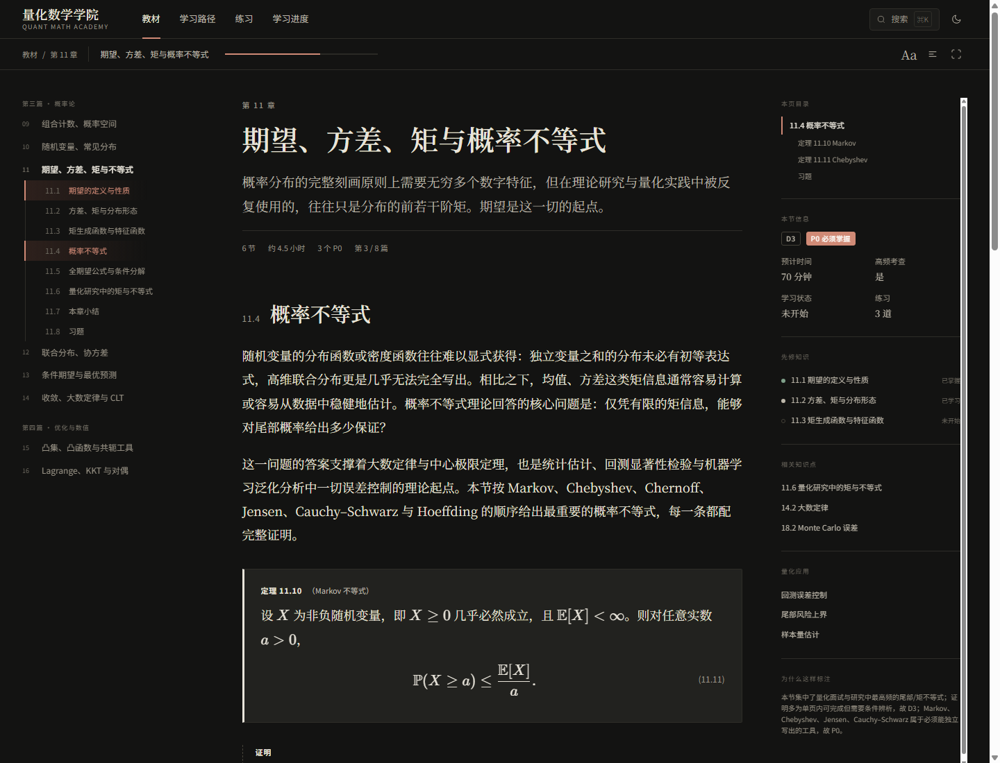
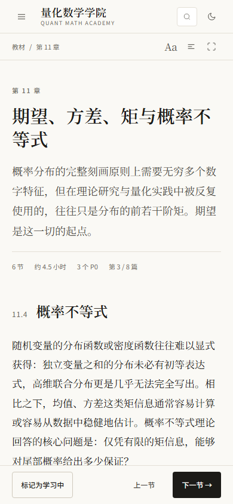

用真实教材内容验证阅读体验、目录结构、难度/必要性标注与移动端布局。静态 HTML 仅作设计参考，生产实现以 docs/design/DESIGN_SYSTEM.md 为准。
docs/design/DESIGN_SYSTEM.md

定义/定理/证明/例题的层级、KaTeX 公式、右栏标注与先修、章内目录。
继续学习、今日面板、三条学习路径与全书地图。

8 篇 34 章完整目录；C11 展开显示节、D/P、时长与状态。

暖黑底、纸色字、同一个强调色；验证公式与卡片对比度。

390px 单栏、标题换行、正文可读、底部操作栏。
capture.mjs